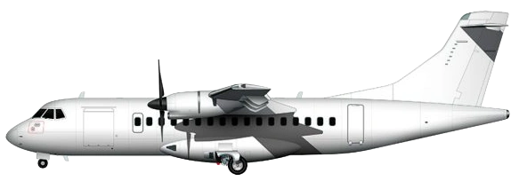

ATR-Regional

42-600
72-600
Game Stats
Other Information
The ATR-Regional are regional propeller aircraft from the French company ATR.
In-game
Both models have similar amount of aircraft in circulation, and the top owners have less than 10% of the total aircraft in circulation.
Specs
Trivia
- FedEx operates some ATR 72s and ATR 42-300s specially configured for cargo. It is the only non-civilian and non-military operator for the ATR 42s.
- Before 2015, the 72-600 used to have 74 seats before 4 extra seats were be approved to fit in the plane.
External Links
- ATR 42-600 on Wikipedia
- ATR 72-600 on Wikipedia
- Manufacturer's site
- ATR 42 / ATR 72 / ATR 72ULR livery templates
Gallery
Original content from
Airline Club Wiki
. Licensed under CC-BY-SA.